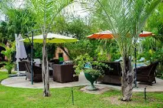

Statistics
- Population: Lusaka is the capital and largest city of Zambia, with a population that was estimated to be around 2.5 million people in 2021.
- Economy:Lusaka is the economic and administrative center of Zambia. It serves as a hub for trade, finance, and government activities. The city has a diverse economy, with sectors such as mining, manufacturing, agriculture, and services contributing to its growth.
- Geography:Lusaka is located in the southern part of Zambia, on a plateau at an elevation of around 1,279 meters (4,196 feet) above sea level. The city is situated at the crossroads of several major highways and serves as a transportation hub for the region.
- Infrastructure:Lusaka has undergone significant infrastructure development in recent years, with improvements to roads, public transportation, and utilities. However, like many African cities, it still faces challenges related to urbanization, such as traffic congestion and inadequate housing.
- Culture: Lusaka is known for its vibrant culture, which reflects Zambia's diverse ethnic groups. The city hosts various cultural events, festivals, and markets where visitors can experience Zambian music, dance, art, and cuisine.

Demographics
- Population Growth: Lusaka has experienced significant population growth over the years, fueled by rural-to-urban migration and natural population increase. The city's population has been steadily increasing, contributing to its status as one of the fastest-growing cities in Africa.
- Language: English is the official language of Zambia and is widely spoken and understood in Lusaka, particularly in formal settings, government offices, and businesses. However, several indigenous languages are also spoken by different ethnic groups, including Bemba, Nyanja, Tonga, Lozi, and Lunda.
- Religion: Lusaka, like the rest of Zambia, is religiously diverse. Christianity is the predominant religion, with various denominations represented, including Protestantism, Catholicism, and Pentecostalism. There is also a Muslim minority and followers of traditional African religions.
- Education and Literacy: Lusaka is home to numerous educational institutions, including universities, colleges, and schools. The city has made strides in improving access to education, and literacy rates have been increasing over the years.
- Migration: Lusaka attracts migrants from other parts of Zambia and neighboring countries seeking better economic opportunities, education, and access to services. This migration contributes to the city's diverse population and cultural vibrancy.
- Income Disparities: Despite its economic growth and development, Lusaka, like many cities in Africa, grapples with income disparities. There is a noticeable gap between the affluent and the impoverished, with informal settlements (or shantytowns) existing alongside upscale neighborhoods.